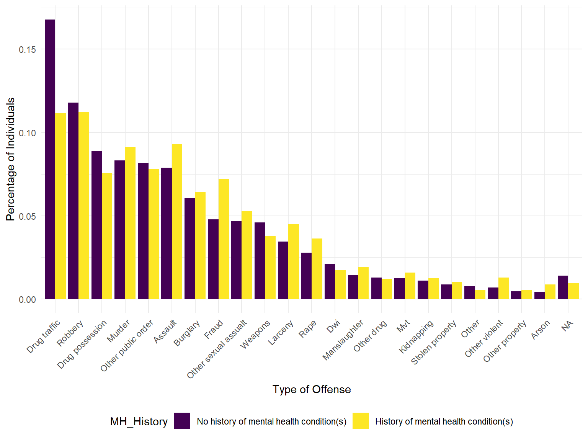
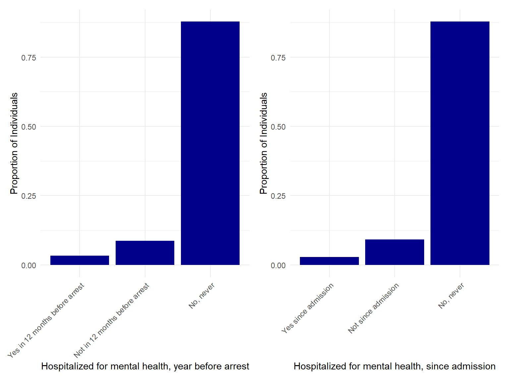
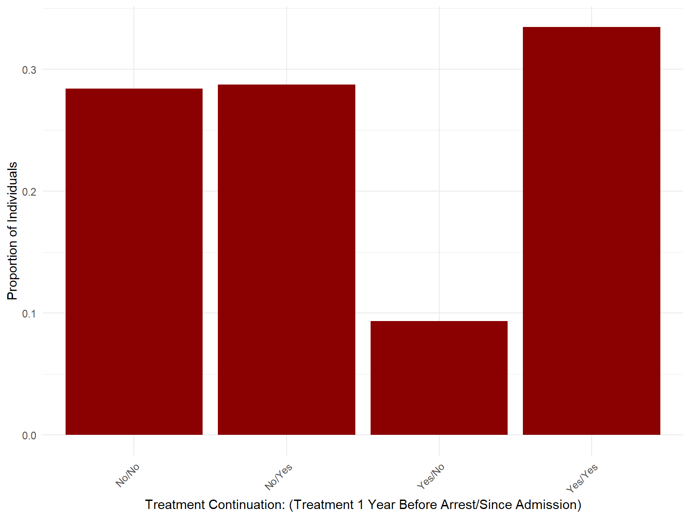

Exploratory Data Analyses
To conduct our exploratory and statistical data analyses, we first
imported the datasets containing observations of both state and
federally incarcerated individuals from the
Survey of Inmates in State and Federal Correctional Facilities, [United States], 2004 (ICPSR 4572)
into R. We also selected our variables of interest to pare down the
datasets.
We next stacked these two datasets using a newly created variable
called dataset to identify which original file each
observation was from (i.e., state vs. federal). We cleaned the resulting
data by checking for coding errors, recoding various factor variables,
adding variable labels, and changing the coding of values from
missing/don't know/unknown to
NA for consistency.
This tidying and cleaning resulted in a combined dataset with
17881 rows (observations) and 60 columns
(variables). The resulting dataset includes demographic, geographic,
incarceration-related, and health-related variables.
Demographics
To examine the distribution of demographic variables across our
dataset, we created a tabular display of variables sex
(V0005), age group (AGE_CAT), and
race/ethnicity (V2982).
Distribution of Demographic Variables by Mental Health History
#Demographics Table
table1(~ V0005 + AGE_CAT + V2982 | MENTAL_HISTORY_BINARY, data = total_df, overall = "Total")| No history of mental health condition(s) (N=12997) |
History of mental health condition(s) (N=4884) |
Total (N=17881) |
|
|---|---|---|---|
| Sex | |||
| Male | 10898 (83.9%) | 3157 (64.6%) | 14055 (78.6%) |
| Female | 2099 (16.1%) | 1727 (35.4%) | 3826 (21.4%) |
| Age Group | |||
| < 25 yrs | 2027 (15.6%) | 741 (15.2%) | 2768 (15.5%) |
| 25-34 | 4409 (33.9%) | 1552 (31.8%) | 5961 (33.3%) |
| 35-44 | 3930 (30.2%) | 1623 (33.2%) | 5553 (31.1%) |
| 45-54 | 1891 (14.5%) | 756 (15.5%) | 2647 (14.8%) |
| 55-64 | 597 (4.6%) | 182 (3.7%) | 779 (4.4%) |
| 65-96 | 143 (1.1%) | 30 (0.6%) | 173 (1.0%) |
| Unknown | 0 (0%) | 0 (0%) | 0 (0%) |
| Race/Ethnicity | |||
| White non-Hispanic | 3832 (29.5%) | 2456 (50.3%) | 6288 (35.2%) |
| Black non-Hispanic | 5691 (43.8%) | 1403 (28.7%) | 7094 (39.7%) |
| Hispanic | 2727 (21.0%) | 647 (13.2%) | 3374 (18.9%) |
| American Indian, Alaska Native non-Hispanic | 243 (1.9%) | 97 (2.0%) | 340 (1.9%) |
| Asian, Pacific Islander, Native Hawaiian non-Hispanic | 162 (1.2%) | 34 (0.7%) | 196 (1.1%) |
| Multiple Races reported, non-Hispanic | 321 (2.5%) | 240 (4.9%) | 561 (3.1%) |
| Missing | 21 (0.2%) | 7 (0.1%) | 28 (0.2%) |
From this table, we can see that certain variables appear to differ by mental health history, one of our primary outcomes of interest. Therefore, we have performed some hypothesis testing on the Statistical Analysis page to assess whether the observed differences are significant.
Educational Attainment by Mental Health History
#Bar Graph for EDUCATION
education_bar =
total_df %>%
group_by(MENTAL_HISTORY_BINARY, EDUCATION) %>%
summarise(n = n()) %>%
mutate(freq = n / sum(n)) %>%
rename(MH_History = MENTAL_HISTORY_BINARY) %>%
ungroup() %>%
ggplot(aes(x = EDUCATION, y = freq, fill = MH_History)) +
geom_bar(position = "dodge", stat = "identity") +
theme(axis.text.x = element_text(angle = 60, hjust = 1)) +
labs(
x = "Education",
y = "Proportion of Total")+
guides(fill=guide_legend(title="Mental Health History"))
ggplotly(education_bar)When displayed on a bar graph, the two groups of mental health history have similar distributions of educational attainment, but categories from 10th-12th grade appear to have higher proportions of individuals with no mental health history, whereas the college-level categories interestingly have a higher proportion of individuals with a history of mental health condition(s).
Income in Month Before Arrest by Mental Health History
#BAR graph for SES_INCOMEMTH
income_bar =
total_df %>%
group_by(MENTAL_HISTORY_BINARY, SES_INCOMEMTH) %>%
summarise(n = n()) %>%
mutate(freq = n / sum(n)) %>%
rename(MH_History = MENTAL_HISTORY_BINARY) %>%
ungroup() %>%
ggplot(aes(x = SES_INCOMEMTH, y = freq, fill = MH_History)) +
geom_bar(position = "dodge", stat = "identity") +
theme(axis.text.x = element_text(angle = 45, hjust = 1)) +
labs(x = "Monthly Income in Month Before Arrest",
y = "Percentage of Individuals") +
guides(fill=guide_legend(title="Mental Health History"))
ggplotly(income_bar)With regard to monthly income in the month before arrest, the two
categories of mental health history do not have easily distinguishable
patterns/distributions. However, in the lower income categories (up to
the $800 - $999 category), there are a higher proportion of
individuals with a history of mental health condition(s) - the opposite
is true for all categories including and above
$1,000 - $1,199.
Incarceration-Related Variables
Type of Offense by Mental Health History
#Bar graph fir TYPEOFOFFENSE
total_df %>%
group_by(MENTAL_HISTORY_BINARY, TYPEOFFENSE) %>%
summarise(n = n()) %>%
mutate(freq = n / sum(n)) %>%
mutate(TYPEOFFENSE = fct_reorder(TYPEOFFENSE, -freq)) %>%
rename(MH_History = MENTAL_HISTORY_BINARY) %>%
ungroup() %>%
ggplot(aes(x = TYPEOFFENSE, y = freq, fill = MH_History)) +
geom_bar(position = "dodge", stat = "identity") +
theme(axis.text.x = element_text(angle = 45, hjust = 1)) +
labs(x = "Type of Offense",
y = "Percentage of Individuals")
The above bar graph shows that the two most common types of offense for both categories of mental health history are drug trafficking and robbery, while arson and other property crimes are the least common for both categories.
Number of Prior Arrests by Mental Health History
#Density plot for V1197
total_df %>%
rename(MH_History = MENTAL_HISTORY_BINARY) %>%
ggplot(data = ., aes(x = V1197)) +
geom_density(aes(color = MH_History)) +
labs(x = "Number of Prior Arrests")
The density plot above shows that the distributions of the number of prior arrests are extremely similar for both categories of mental health history. Most of the same peaks are observed in each distribution, suggesting there may be something significant about these seemingly arbitrary numbers of arrests. However, it does seem like a higher proportion of individuals with no mental health history have 0 to roughly 5 arrests compared to inmates with mental health condition(s).
Mental Health
Medication for Mental Health (Ever and Since Admission)
#Stacked bar graph for V2409 and V2412
total_df %>%
filter(V2409 == "Yes" | V2409 == "No") %>%
filter(V2412 != "(7) Don't know") %>%
group_by(V2409, V2412) %>%
summarise(n = n()) %>%
ggplot(., aes(fill = V2412, y = n, x = V2409)) +
geom_bar(position = 'stack', stat = 'identity') +
theme_minimal() +
labs(x = 'Ever Taken Medication for Mental Health', y = 'Number of Individuals') +
scale_fill_manual('Taken Medication for Mental \nHealth Since Admission', values = c('dark green', 'steelblue'))Less than half of individuals surveyed have ever taken medication for a mental health condition, but among those who have, most have taken such medication since their admission/incarceration.
Mental Health Hospitalization
# Bar graph of MCMH_MHOSPYR
hosp_year =
total_df %>%
group_by(MCMH_MHOSPYR) %>%
summarise(n = n()) %>%
mutate(freq = n / sum(n)) %>%
drop_na() %>%
mutate(MCMH_MHOSPYR = fct_reorder(MCMH_MHOSPYR, freq)) %>%
ungroup() %>%
ggplot(aes(x = MCMH_MHOSPYR, y = freq)) +
geom_bar(position = "dodge", stat = "identity", fill = "dark blue") +
theme(axis.text.x = element_text(angle = 45, hjust = 1)) +
theme(legend.position = "none") +
labs(x = "Hospitalized for mental health, year before arrest", y = "Proportion of Individuals")
# Bar graph of MCMH_MHOSPADM
hosp_adm =
total_df %>%
group_by(MCMH_MHOSPADM) %>%
summarise(n = n()) %>%
mutate(freq = n / sum(n)) %>%
drop_na() %>%
mutate(MCMH_MHOSPADM = fct_reorder(MCMH_MHOSPADM, freq)) %>%
ungroup() %>%
ggplot(aes(x = MCMH_MHOSPADM, y = freq)) +
geom_bar(position = "dodge", stat = "identity", fill = "dark blue") +
theme(axis.text.x = element_text(angle = 45, hjust = 1)) +
theme(legend.position = "none") +
labs(x = "Hospitalized for mental health, since admission", y = "Proportion of Individuals")
hosp_year + hosp_adm
Treatment Continuation (mental health treatment one year prior to arrest and since admission)
# Line graph for MH treatment continuation (one year prior to arrest and since admission)
total_df %>%
filter(MENTAL_HISTORY_BINARY == "History of mental health condition(s)") %>%
group_by(MCMH_MH_TREATMENT_PA, MCMH_MH_TREATMENT_AD) %>%
mutate(
MCMH_MH_TREATMENT_PA = gsub(".* ", "", MCMH_MH_TREATMENT_PA),
MCMH_MH_TREATMENT_AD = gsub(".* ", "", MCMH_MH_TREATMENT_AD),
tx_pa_ad = str_c(MCMH_MH_TREATMENT_PA, '/', MCMH_MH_TREATMENT_AD)) %>%
ungroup() %>%
group_by(tx_pa_ad) %>%
summarise(n = n()) %>%
mutate(freq = n / sum(n)) %>%
ggplot(aes(x = tx_pa_ad, y = freq)) +
geom_bar(position = "dodge", stat = "identity", fill = "dark red") +
theme(axis.text.x = element_text(angle = 45, hjust = 1)) +
theme(legend.position = "none") +
labs(x = "Treatment Continuation: (Treatment 1 Year Before Arrest/Since Admission)", y = "Proportion of Individuals") 
The bar graph above restricts our analysis of treatment continuation
to only those individuals with a history of mental health condition(s)
as indicated by the MENTAL_HISTORY_BINARY variable. Among
those survey respondents, it found that roughly two-thirds of
individuals either had constant treatment status before and after
incarceration (either no treatment -> no treatment or yes treatment
-> yes treatment). Almost one-third of individuals began treatment
while incarcerated and less than 10% had received treatment before
incarceration but were no longer doing so.
Distribution of HIV Status by Mental Health History
table1(~ MCMH_RSLT_HIV | MENTAL_HISTORY_BINARY, data = total_df, overall = "Total")| No history of mental health condition(s) (N=12997) |
History of mental health condition(s) (N=4884) |
Total (N=17881) |
|
|---|---|---|---|
| HIV Status | |||
| Positive | 144 (1.1%) | 84 (1.7%) | 228 (1.3%) |
| Presumed Negative | 10276 (79.1%) | 3976 (81.4%) | 14252 (79.7%) |
| Missing | 2577 (19.8%) | 824 (16.9%) | 3401 (19.0%) |
Finally, the table above illustrates HIV status
(MCMH_RSLT_HIV) for those with and without a history of
mental health condition(s). We utilize the value label
presumed negative as opposed to negative
because the variable used for analysis codes HIV status as either “at
least one positive test” or “at least one negative and the other
unknown” based on HIV testing status from both before and after
incarceration. The tabular analysis demonstrates an HIV prevalence of
roughly 1.3% for our total cross-sectional sample of incarcerated
individuals, which appears to differ somewhat between those with and
without a history of mental health condition(s) (1.7% and 1.1%,
respectively).